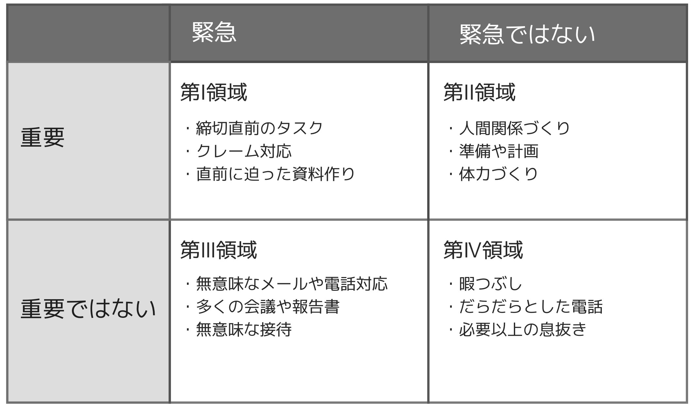
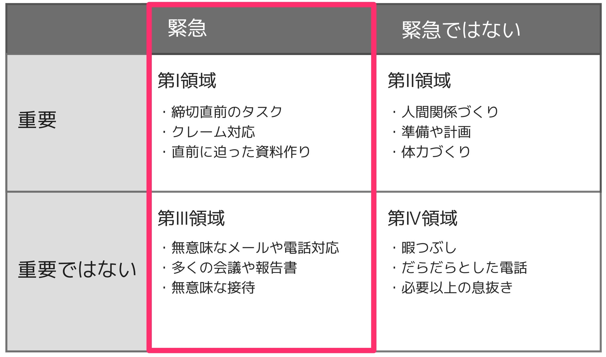
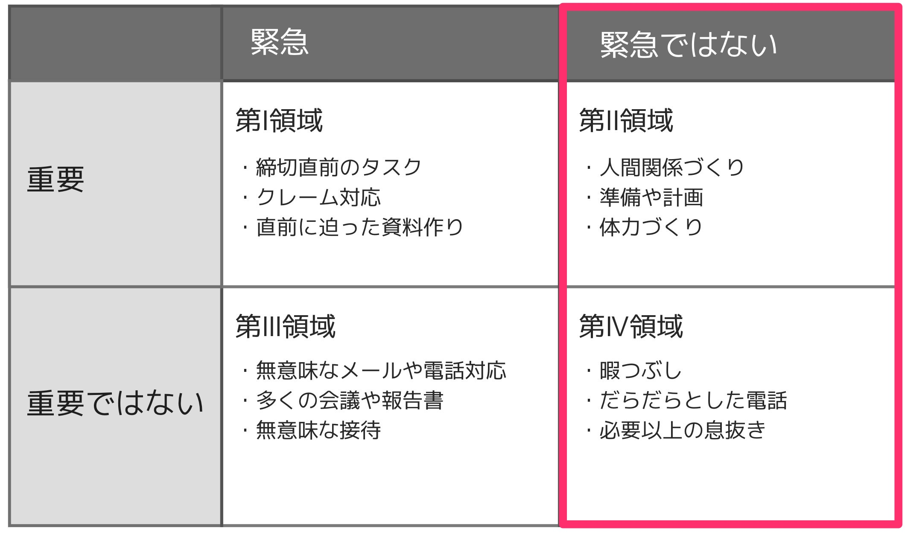

![ロゴ]()
【バカ向け】これからの時代の稼ぎ方は”付加価値”を高めるしかない。
これからの時代の稼ぎ方を考える人「これからの時代は、どういった稼ぎ方をすべきだろう？ AI化やロボット化が叫ばれるけど、、、じゃあ具体的に何をしたらいいの？ これからの時代の仕事、これからの時代の稼ぎ方を知りたいな。」
こういった疑問に答えます。
本記事の内容
- これからの時代は『付加価値』を上げて稼ぐしかない
- 付加価値を高めて稼ぐ方法【緊急度の低いタスクが重要】
- 結論 : 行動するしかない【バカは動くしかない】
この記事はバンコクで書いています。
何で僕がバンコクにいるかというと、、、特に意味はありません笑。気候が良いのでバンコクに住んでいます。お仕事はブログを通して受注しており、完全にリモートワークで受託できる案件のみで生計を立てています。
なお、こういった働き方は”デジタルノマド”と言われており、近年急速に伸びています。伸びる理由は簡単でして、、、コスパが良いからですね。日本円を稼いで、物価の安い国に住みましょうというコンセプト。
といった背景で、（たぶん）未来的な働き方をしている僕ですが、本記事では”これからの時代の稼ぎ方”を考えてみました。やるべきことをズバリを述べましたので、AI化・ロボット化時代を生き抜くための参考になればと思います。
これからの時代は『付加価値』を上げて稼ぐしかない
{kind=link}
日本の生産性をご存知でしょうか？
日本は生産性ランキングで世界で22位です。
※公益財団法人日本生産性本部ウェブサイトより
まぁ、このデータには賛否両論ありますが、、、ぶっちゃけ”日本社会の生産性が低い”と思います。長過ぎる会議や満員電車、年間休日日数が少ないことからも分かるんじゃないかなと…。
頑張れば伸びる時代は終わった
「バブルの時代」を回顧するときは、六本木のディスコや銀座のクラブ、地上げや株の話になることが多いが、いまの時代とのいちばんのちがいは、「頑張って働けば結果が出る」という体験ではないだろうか。市場が縮小していくなかでは、どれほど働いても成功はまれで、やがて仕事は長時間の苦役になってしまう。
80’s エイティーズ ある80年代の物語
先日読んだ80sという本ですが、とても心に残った部分です。
著者の橘玲さんは、世の中をうまく生き抜くための本を多数だしており、個人的にはイチオシの作家さんです。僕はほぼ全ての著書を読みました。
» Amazon.co.jp: 橘 玲:作品一覧、著者略歴
付加価値を上げるしかない
頑張っても伸びない時代なので、やるべきことは付加価値を高めることです。
なので、現代において”激務”を課されている社員は”かなり不幸”です。
というのも、”時間をかけて努力したら伸びる時代”は終わっているので、無理に働いても、結果には結びつかないからです。
また、日本では高齢化社会の問題もあります。
※参考：2025年、高齢者1人を現役世代何人で支える？ : 財務省
- 1950年時点では、12.1人の若者が、1人の高齢者を支えてました
- 2016年時点では、2.2人の若者が、1人の高齢者を支えてました
- 2025年時点では、1.8人の若者が、1人の高齢者を支えるという予想です
現代の若者はつらい。
わりと人生がハードモードなので、、、ぶっちゃけリセットしたいですが、今のところリセットする方法は見つかりません。なので、仕方なしに生きるのですが、、、じゃあやることは、、、繰り返しですが、”付加価値のアップ”です。
効率的に稼いで、効率的に生きてくしかないです。
日本の衰退っぷりを見ていれば、大企業のやり方が間違っていることも分かるはず。自分で考えて、自分で行動して、自分の価値を高めるしかないですね。
とはいえ、、、「じゃあ、何すればいいの？」という疑問が浮かぶはず。
その点をお話します。
付加価値を高めて稼ぐ方法【緊急度の低いタスクが重要】
結論は次のとおり。

上記は七つの習慣に出てくる図ですが、一番大切なタスクが、右上になります。
要するに、急いでやらなくてもいいけど、将来的な資産に繋がる仕事をしましょうねって話です。
{kind=link}
”緊急度の高い仕事”に価値はない

今までは、”緊急”に部類される仕事をしても、生きていける時代でした。
というのも、人口増加と経済成長に支えられていたから。
{kind=link}
一部の人が、多大なる生産性を発揮してビジネスを伸ばし、その周りで馬車馬のように働く人が多かったという構造です。
”緊急度の低い仕事”の価値が高まる

今後は右側が重要になります。
とうのも、ロボット化やAI化で、単調な仕事がなくなっていくから。
{kind=link}
※一番重要は右上だと思いますが、右下の領域にも可能性があると感じています。ここは何とも言葉での解説が難しいのですが・・・。例えばゲームとかって右下の領域ですが、、、Youtubeのゲーム実況とかをみていると、それは右上ですよねって話です。
「人間に出来る仕事ってなに」と聞かれたら、アートだったりの領域ですよね、と言われています。
※この辺りは元アップルの松井博さんの著書（企業が「帝国化」する）を参考にしています。
緊急ではない仕事にコミットするべき
僕がコミットしたのはブログです。
元々、Webマーケティングやプログラミングが得意だったので、ブログという媒体を育てて、仕事を得られる仕組みを作りました。ありがたいことに、最近はほぼ毎月のようにお仕事依頼をいただけております。
また、ブログ内の広告（アフィリエイト）も最適化しており、約１年ほど、毎日ブログを書き続けた結果、月間収益で100万円を超えることができました。
» WordPressを使ったブログの始め方、収益アップとSEOも合わせて解説
ブログは”常に緊急度の低い仕事”です。
当たり前ですが、ブログをサボったとしても誰にも怒られないですからね。でも、この領域に一番価値があると思いまして、もちろん既存の仕事を頑張る事も大切ですが、全体の２割くらいの時間は、ブログといった”緊急ではない”仕事に費やすのが良いと思います。
行動し続ける人は伸びている
個人的にすごいなぁと思っている方が、次の2名です。
- 名もなきライター（@writer_noname）：圧倒的な努力コミットが最強。ここまで突き抜けている人は、あまり見かけないですね…。
- こびと株さん（@kobito_kabu）：大手企業で経理をしつつ、副業でブログを始めて安定的な収益を生み出しています。
みなさんゴリゴリ稼がれており、名もなきライターさんに至っては、金額がものすごいレベルですが、、、みなさん日々、めっちゃ努力しているように見えます。
結論 : 行動するしかない【バカは動くしかない】
{kind=link}
これからの時代の働き方の結論
平凡な結論でごめんなさい。
でも、ここから見えてくることもあるはずです。
忙しすぎることはNG
当たり前ですが、タスクに埋もれていたら”緊急度の高い仕事”から処理するしかないですよね。
でも、その状態だと、将来的な可能性を増やす事ができません。
なので、”ある程度はヒマ人”という条件も大切なのかなと思います。
愚者は経験に学び、賢者は歴史に学ぶ。
有名な格言ですが、基本的に僕は”バカ”です。
たぶん、この記事を読んでいる方の大半も”バカ”です。
なので、バカがやるべきことは、”行動から学ぶ”のみです。
僕はバカ（愚者）なので、基本的に行動するようにしています。
学生時代からビジネスをやってみたり、パーティーを主催してみたり、怪しいアフィリエイトをやってみたり、情報商材みたいなビジネスをやってみたり、新卒で海外就職してみたり、すぐにサラリーマンを辞めてみたり、海外で起業してすぐに失敗してみたり、、、など。
愚者は経験に学び、賢者は歴史に学ぶ。そして聖人は経験から悟る。
先ほどの格言には続きがあります。
バカなのでとりあえず動くしかないです。
動いた結果、壁にもぶつかるし、穴にも落ちるし、お金も消費するし、世の中からバカにされることもあります。
でも、聖人は経験から語る＼(^o^)／
バカが動きまくった結果を、世の中に発信すれば、聖人になれるってことですね。
というわけで、聖人を目指して、行動するしかないなぁと思う、今日このごろです。
あたしは10代の終わりに一人暮らしを始め、20代で水商売含めて多彩なバイトをし、起業も経験し、バブルに踊り、共産国や途上国をひとりで歩き回ったあと、アメリカに2年間住んで学位をとった。すくなくともこの「行動の量」で負けてる人には、「ちきりん」以上のブログは書けない。
— ちきりん (@InsideCHIKIRIN) January 1, 2018
まとめ：普通に生きたら人生ハードモード。工夫が大切です。
{kind=link}
- これからの時代の稼ぎ方は”付加価値”を上げるしかない
- 付加価値を高めるには、”緊急度の低いタスク”が重要です
- ある程度ヒマ人になって、”行動”から学ぶのが正しい道です
こんな感じです。
個人的には、次の領域に可能性があるなぁと思っています。
これからの時代に可能性を感じる”緊急度の低い”タスク
- ブログを活用した、実名での情報発信
- Youtubeを活用した、得意分野や好きなことの情報発信
- e-Sports業界で、有名なゲーマーを目指す
- バーチャルYoutuberのプロデュース業
- セルフプロデュースして、フォロワーから資金援助を受ける
ざっくりですが、、、こんな感じです。
繰り返しですが、まずは日々の業務もちゃんと頑張るべきです。仕事がつまらなすぎて、ストレス過ぎるなら辞めてもいいですが、そうじゃないなら、頑張るべきかなと。
日々の努力をしつつ、同時並行で”緊急度の低いタスク”をする。
これが良いかなと思っており、僕は”ブログ”と”e-Sports”の領域で攻めようと思っています。
よし、決めた。
来月中にゲーム用のPCを買って、e-Sports業界に参入します。
元々は超ゲーム廃人でして、毎日14時間プレイしてました。今後e-Sportsが伸びるだろうから、マネタイズを考えつつで参入します(｀･ω･´)ゞ— マナブ@バンコクと仮想通貨 (@manabubannai) January 29, 2018
幼稚園の頃からゲームにどハマりして、、、中学ではWinnyとブログにどハマりして、、、高校ではオンラインゲームをやりまくる、、、という人生だっけど、とりあえずブログは仕事になりました（生活費稼げています）。
次に目指すはゲームを仕事にする事だと思っており、e-Sports頑張りたい😌— マナブ@バンコクと仮想通貨 (@manabubannai) January 29, 2018
というわけで、今回は以上です。
この記事は、僕が考える”これからの働き方・稼ぎ方”の結論ですが、みなさんはどう思いますか？意見や感想など、ぜひTwitterでお聞かせください！
» マナブ@バンコクと仮想通貨 (@manabubannai) | Twitter
P.S：普段の僕は「Twitter」を軸に発信しています。また最近は「Webマーケ教材」の作成に注力しており、ネットで稼ぐスキルを学べます。ブログの更新通知は「メルマガ」から送っています。スパムは送りません。更新通知だけ送ります。